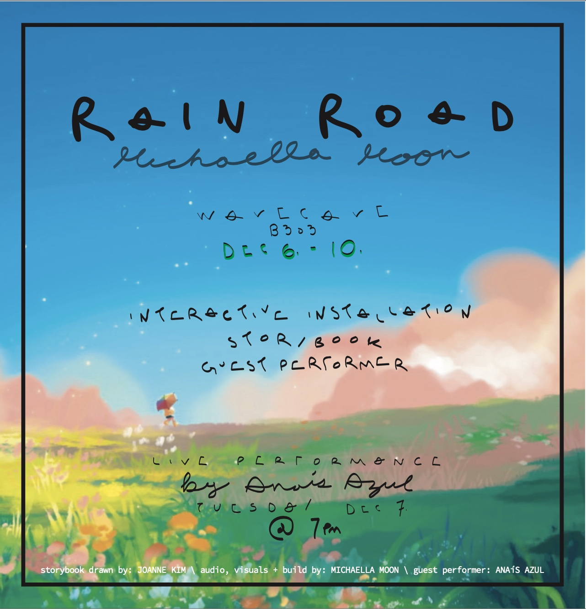

Premiered December 6 - 18th 2021 at California Insitute of the Arts: Wavecave.

Rain road is based on the storybook, Rain Road, written by Michaella Moon and illustrated by Joanne Kim.
The story follows the character Jane. Jane worries about her crops in the drought but manages to find a way to convince their friend Cloud to help them water their crops.
As they skip along the dry desert; Cloud, overflowing with rain, trails behind Jane mesmerized by their singing.
This installation invites the audience to interact with the five umbrellas hanging upside down from the ceiling.
Due to orientation of the umbrellas, the whole installation is flipped upside down. The sky, being projected closer
to the space’s floor and the desert scenery towards the ceiling. Each of these umbrellas has its own photocell sensors,
a light-responsive sensor, and arduinos built onto the clear plastic umbrellas. When a light source is shined into
the tops of the umbrellas, it triggers several elements in the installation to change. This one action sets into motion
both an aural and visual change. Each umbrella has its own characteristic audio effect that is added to the song
from a playlist of rain-themed songs.
The playlist currently includes 11 songs:
BJ Thomas- Raindrops Keep Falling On My Head
Blind Mellon- No Rain
Creedence Clearwater Revival- Have You Ever Seen The Rain
Gene Kelly- Singing In The Rain
Guns N’ Roses- November Rain
Lady Gaga- Rain On Me
Led Zeppelin- The Rain Song
Mariah Carey- Through the Rain
Prince- Purple Rain
The Beatles- Rain
Tim McGraw- She’s My Kind Of Rain
With the same light shining motion, there is a change in the projection mapped, AI-generated scenery.
These images were created using a VQGAN+CLIP AI image models. Through this model, one is able to generate images using
carefully selected texts and sentences. Different sentences and words generated different images. This installation uses four
images generated by a VQGAN+CLIP model. There are two sets of these images that represents the before and after of dry desert.
Even though similar keywords were used to create the images, one set of images included more greenery and a sense of abundance
than the other two. The audience interaction switches between the two pairs.
This installation uses multiple programs. Arduino, to control the sensors and LED strips. Processing, to control and
facilitate the data (as a hub that connects the sensors to all the other programs via OSC). MaxMsp, to control the playlist of
songs and audio effects. TouchDesigner, for all the visuals and projection mapping.
RAIN ROAD: Anais Azul _______________________December 7th 2021
Guest performer Anais Azul performed their piece "I Came From" in the Road Road installation space.
As Anais improvised and sang with their loop pedal, the audience members interacted and co-composed alongside them.
By triggering each umbrella, participants were able to add pre-recorded layers to their performance.
RAIN ROAD: Anais Azul _______________________December 16th 2021
The Rain Road installation welcomed guest performers Anais Azul, Chuck Behring and Yolanda Shao.
As Anais and Chuck improvised with their and each other's loop pedal, the audience members interacted and
co-composed alongside them. By triggering each umbrella, participants were able to add pre-recorded layers
to their performance. Yolanda was able to fill the space by creating movements according to the audience's interaction
with the umbrellas.